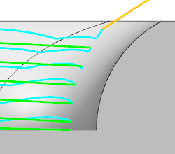
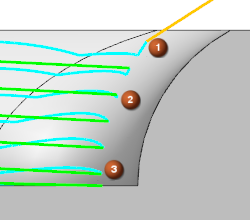
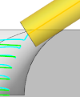
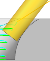
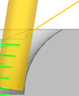

Vary the amount of tool shift
You can vary the amount of tool shift to equalize tool wear.
-
Edit the Contour Profile drive method as shown.
-
Ring Height = Variable
-
Top Distance = 9 mm
-
Bottom Distance = 2 mm
-
-
Generate the tool path.

-
Verify the tool path and select the locations shown to see the tool placement.

Notice the differences in the tool path and where the tool contacts the wall.
Shift distance
None
4 mm
Top = 9 mm
Bottom = 2 mm









-
Click OK to close the Tool Path Visualization dialog box.
-
Click OK to close the Contour Profile dialog box.
-
Close the part without saving it.